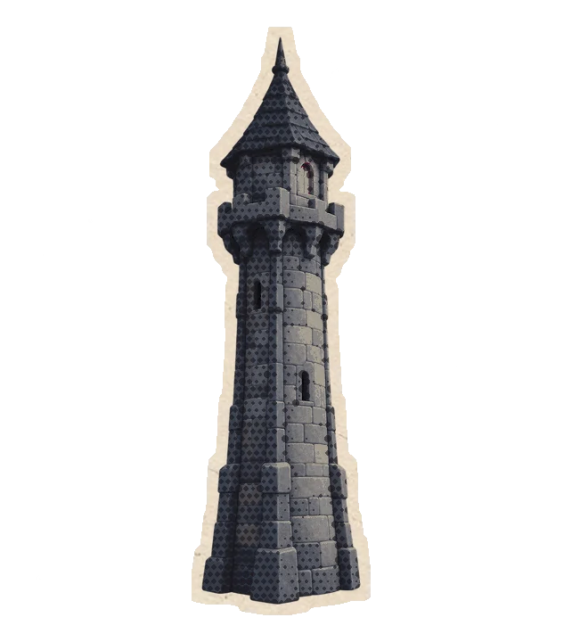
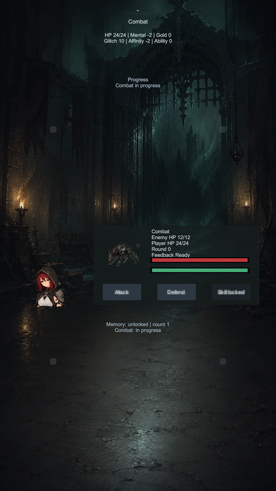
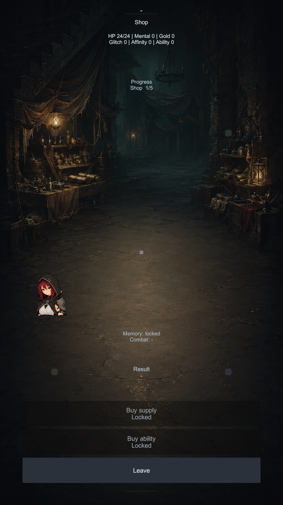
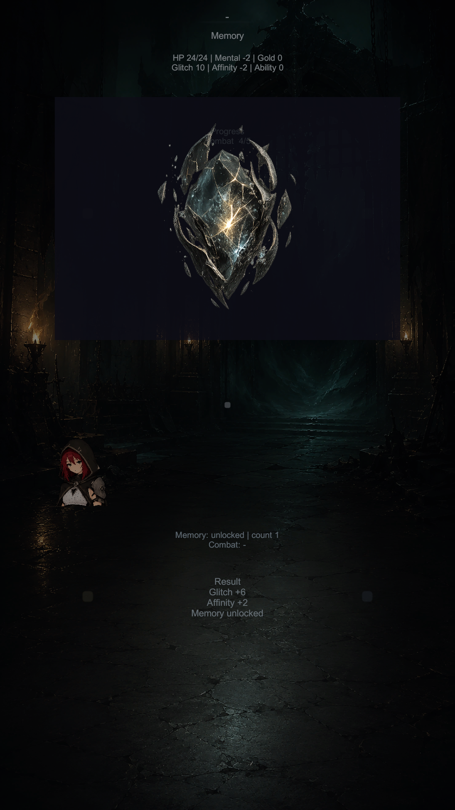
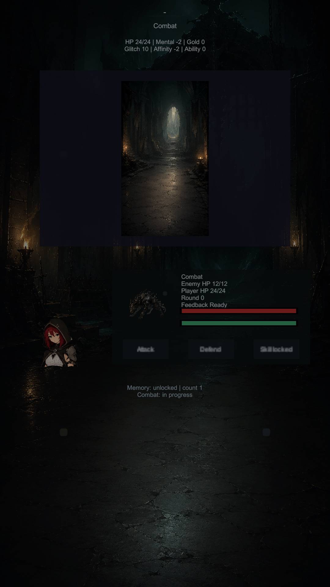
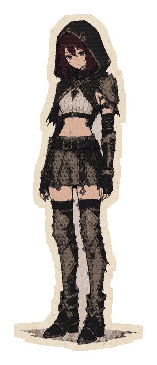
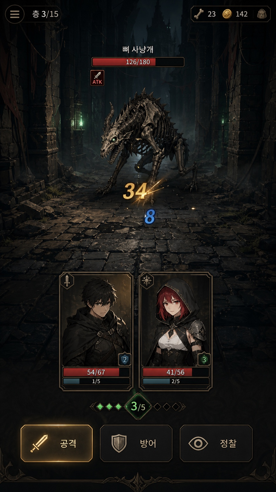
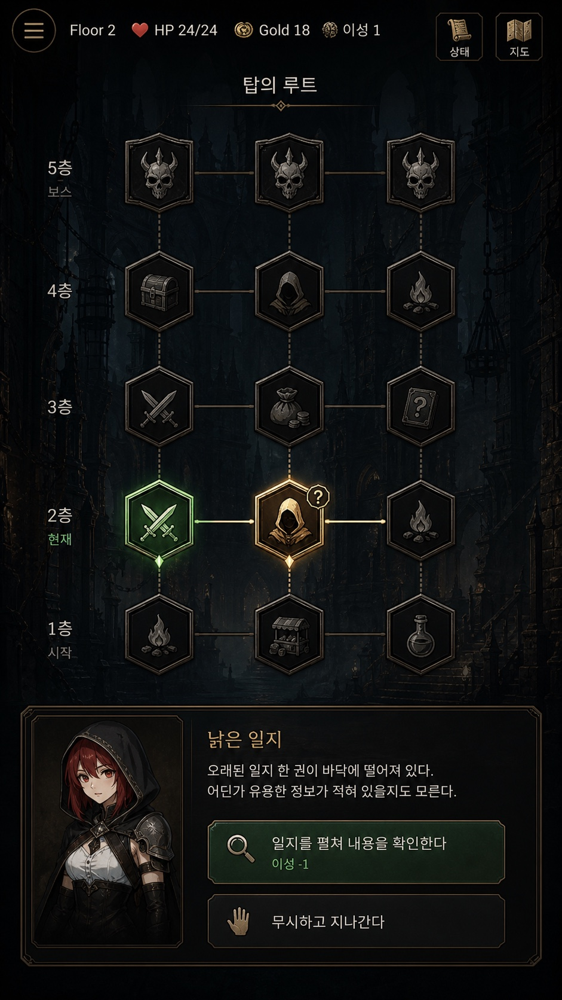
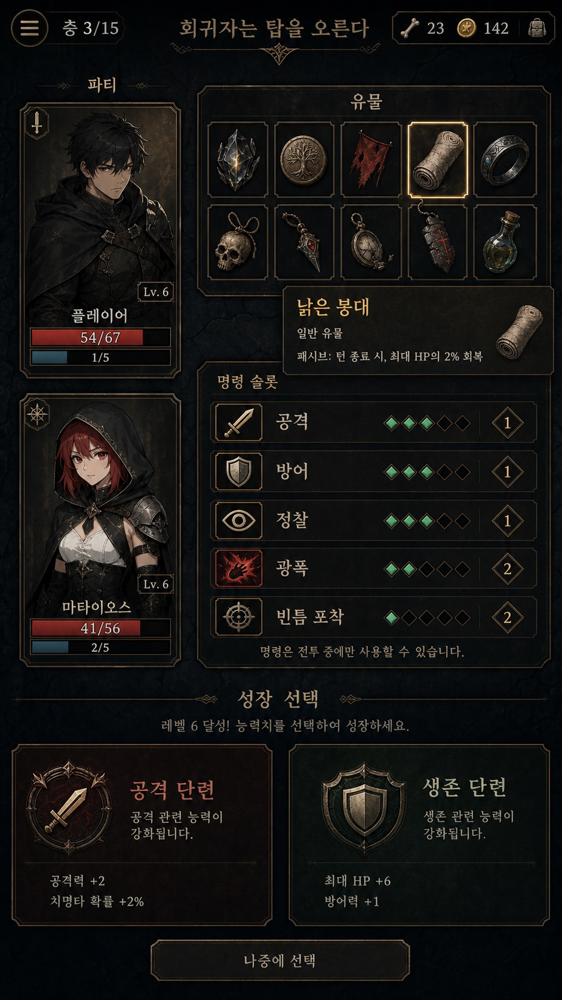

회귀자는 탑을 오른다 강화학습 밸런스 실험, 모바일 세로 로그라이크, 1인 개발
AI가 플레이어보다 먼저
전투의 밸런스 빈틈을 찾았습니다
평균 보상 점수 한 버튼 정책 1.54 → 상황별 규칙 2.10 강화학습 AI를 전투에 먼저 돌려 버튼 하나로 이기는 빈틈을 찾고 규칙을 고쳐 다시 쟀습니다.
단위 없는 점수입니다. 4차 실험(2026-05-25), 같은 전투 규칙, 정책마다 1,000판. 학습 AI는 1만 걸음 학습한 정책입니다.

작품 소개
한 줄 소개, 역할 나눔, 작품 정보
회귀자는 탑을 오른다는 Unity로 만든 Android 세로 로그라이크 프로토타입입니다. 강화학습 AI와 버튼 하나만 누르는 정책을 같은 훈련용 전투에 세웠더니, 3차 실험까지 공격만 누르거나 스킬만 누르는 쪽이 학습 AI보다 평균 보상 점수가 높았습니다. 전투 규칙을 바꿔 다시 재고, 점수가 가장 높았던 상황별 규칙을 동료 마타이오스의 행동 규칙으로 옮겼습니다.
회귀자는 탑을 오른다는 강화학습 AI를 전투에 먼저 돌려 버튼 하나로 이기는 빈틈을 찾고, 규칙을 고친 뒤 점수가 가장 높았던 사람이 짠 규칙을 동료의 행동으로 옮긴 게임입니다.
역할 나눔
내 몫은 기획, 전투 규칙 설계, 실험 설계와 판정, 검증입니다. 코드는 AI 코딩 에이전트 Codex에게 맡겨 짰습니다.
- 내가 정한 것
- 전투 규칙과 실험마다 바꿀 조건, 학습을 멈출 시점, 마타이오스의 판단 규칙, 길 잠금과 전투 미리보기 같은 구현 전 결정 문서
- AI로 짠 것
- 훈련용 전투 장면과 학습 설정, 비교 정책 평가 도구, 결정 문서대로 맡긴 구현 묶음(화면, 전투 재작업, 이벤트 연결, 길 수정). 목표 화면 그림 3장은 그림 생성으로 만들었습니다.
- 내가 확인한 것
- 차수마다 나온 비교표로 내린 통과와 실패 판정, 묶음마다 만든 APK를 실제 폰에서 확인
- 만든 사람
- 이주형. 팀원 없음
- 기간
- 2026-04-27 시작. 전투 실험 여섯 차례는 2026-05-25, 동료 판단 규칙 결정은 2026-05-26입니다.
- 단계
- 정식 출시 전 프로토타입. 실제 플레이어 데이터는 없습니다.
- 쓴 도구
- Unity 6, C#, ML-Agents, Android
시연
Android APK와 Unity 프로토타입 화면 네 장




네 장은 지금 돌아가는 Unity 프로토타입을 캡처한 화면입니다. 시연 영상은 없고, Android 폰에서는 APK 내려받기 폴더의 파일을 설치해 한 판을 해 볼 수 있습니다.
현장 상황
실험 전의 전투와 동료
회귀자는 탑을 오른다의 처음 전투는 공격이나 스킬 버튼 하나만 계속 눌러도 이겼습니다. 플레이어 옆의 동료 마타이오스는 화면 장식처럼 보였고, 같이 싸운다는 느낌이 약했습니다.
2026년 5월 25일 2차 실험에서 1만 걸음 학습한 AI는 고른 행동의 72%가 스킬이었고 방어는 거의 고르지 않았습니다. 방어로 막은 피해는 기록에 0으로 남았습니다. 방어가 무엇을 막았는지부터 기록에 잡히게 해야 했습니다.
학습 AI와 버튼 하나만 누르는 정책을 같은 전투에 세워 점수로 비교하는 실험은 본편과 분리한 훈련용 전투 장면에서 돌렸습니다. 버튼 하나만 누르는 쪽이 이기면 전투 규칙에 빈틈이 있다고 봤습니다.
플레이어가 겪던 문제 네 가지
지도, 전투, 이벤트, 동료
플레이어가 겪던 문제 네 가지
지도, 전투, 이벤트, 동료| 영역 | 플레이어가 겪던 문제 | 바꾼 규칙과 화면 |
|---|---|---|
| 지도 | 선택지가 많아 보여도 의미가 흐린 빽빽한 지도 | 길을 3줄로 줄이고, 다음 칸 종류를 공개하고, 지나친 길은 잠그고, 칸을 누르면 바로 확정 |
| 전투 | 공격만 반복해도 이기는 피해 경쟁 | 행동별 예상값 표시, 적의 다음 행동을 읽는 신호 세 가지, 정찰 스킬 효과 재정의, 피해 분리 표시, 처치 후 2초 결과 표시 |
| 이벤트 | 결과가 늦거나 내부 이름이 그대로 보여 몰입이 끊김 | 이벤트 화면 33칸 연결, 선택지 138개 결과 처리, 고른 선택을 기억한 반응 표시, 내부 이름 숨김 |
| 동료 | NPC가 같이 싸우는지 체감하기 어려움 | 규칙으로 판단하는 동료, 보호와 지원과 마무리 역할, 전투 기록에 행동 주체 표시 |
정한 것과 버린 것
설계 결정 기록에서 고른 다섯 건. 두 건은 펼쳐 두고 세 건은 접었습니다
마타이오스는 학습한 모델 대신 사람이 읽을 수 있는 규칙으로 움직입니다
4차 실험에서 상황별 규칙이 학습 AI와 한 버튼 정책을 모두 이겼고, 5차와 6차에서 학습을 더 손봐도 상황별 규칙을 넘지 못했습니다. 본편 전투는 같은 입력에 같은 결과가 나와야 해서 규칙 쪽을 골랐습니다.
- 버린 안
- 학습한 모델을 본편 전투에 연결하기, 게임 실행 중에 학습하기, 바깥 서버에 판단을 묻기
- 이유
- 규칙은 왜 그렇게 움직였는지 사람이 읽고 고칠 수 있습니다. 마타이오스의 판단에는 호감도, 붕괴 값, 무작위 값을 쓰지 않습니다.
학습 AI는 동료로 쓰지 않고 전투 규칙을 재는 도구로 남겼습니다
3차에서 한 버튼 정책이 여전히 학습 AI보다 높게 나오자, 학습을 5만 걸음으로 늘리는 안을 미루고 전투 규칙을 다시 짰습니다. 6차가 실패한 뒤에는 추가 학습을 멈췄습니다.
- 버린 안
- 5만 걸음 학습, 6차 뒤 설정을 더 바꿔 가며 재학습
- 이유
- 한 버튼 정책이 이기는 원인이 학습량보다 전투 규칙에 있다고 봤습니다. 5차와 6차는 실패 기록으로 남기고 4차를 받아들인 결과로 두었습니다.
지도는 3줄 길로 줄이고 한 번 고른 칸은 되돌릴 수 없습니다
결정 D-034, 2026-05-27
지도는 3줄 길로 줄이고 한 번 고른 칸은 되돌릴 수 없습니다
결정 D-034, 2026-05-27다음 칸은 종류를 보여 주되 아직 갈 수 없으면 어둡게 두고, 갈 수 있는 칸을 누르면 바로 그 칸으로 들어갑니다. 휴식 칸은 층이 시작하자마자 나오지 않습니다.
- 버린 안
- 지도 없이 선택지 창만 띄우기, 모든 칸이 서로 이어진 빽빽한 지도, 칸에 들어간 뒤 지도로 돌아가 다른 칸 고르기
- 이유
- 칸 사이 연결이 빽빽하면 무엇을 골라도 차이가 없어 보입니다. 되돌릴 수 없어야 길 고르기에 잃을 것이 생깁니다.
전투 미리보기 숫자는 실제 계산 코드에서 가져옵니다
결정 D-036, 2026-05-27
전투 미리보기 숫자는 실제 계산 코드에서 가져옵니다
결정 D-036, 2026-05-27공격은 예상 피해, 방어는 막는 양, 스킬은 쓸 수 있는지와 남은 대기 시간을 보여 줍니다.
- 버린 안
- 화면 쪽에서 피해 공식을 따로 계산해 보여 주기, 전투 중 아이템 쓰기
- 이유
- 화면 숫자와 실제 피해가 어긋나면 플레이어가 화면을 믿지 못하고 검증도 할 수 없습니다. 전투 중 아이템은 읽기만 되게 했습니다.
정찰 스킬은 이름을 바꾸지 않고 효과를 이름에 맞췄습니다
결정 D-038, 2026-05-31
정찰 스킬은 이름을 바꾸지 않고 효과를 이름에 맞췄습니다
결정 D-038, 2026-05-31정찰은 이름과 달리 바로 큰 피해를 주는 스킬이었습니다. 다음 공격을 강하게 하고 피해를 한 번 줄이는 준비 스킬로 바꿨습니다. 전투 명령은 공격과 방어를 포함해 다섯 칸으로 묶었습니다.
- 버린 안
- 정찰을 집중 타격으로 이름만 바꾸기
- 이유
- 처음 안은 이름 바꾸기였고 같은 날 효과를 고치는 쪽으로 되돌렸습니다. 명령을 다섯 칸으로 묶어 세로 화면 전투에서 고를 것이 늘지 않게 했습니다.
만든 것과 작동 순서
전투 실험 여섯 차례, 한 판 네 단계, 동료의 판단 순서. 실험은 3차와 4차를 펼쳐 두고 네 건은 접었습니다
전투 실험 1차에서 6차
여섯 차례 모두 2026-05-25 하루에 본편과 분리한 훈련용 전투 장면에서 돌렸습니다. 2차부터는 차수마다 PPO로 1만 걸음을 학습시키고, 규칙으로 움직이는 비교 정책을 1,000판씩 평가해 같은 표에 놓았습니다.
스킬 비중은 줄었지만 한 버튼 정책이 여전히 이겼습니다
스킬에 1턴 대기 시간과 비용을 넣고, 방어로 막은 피해를 점수에 넣었습니다. 사람이 상황별로 짠 규칙도 비교 정책에 더했습니다. 학습 AI의 스킬 비중은 72%에서 31%로 내려갔고, 한 걸음에 막은 피해는 0에서 0.25가 됐습니다. 공격만 누르기와 스킬만 누르기는 학습 AI보다 점수가 높았습니다.
- 판정
- 학습을 5만 걸음으로 늘리기보다 전투 규칙을 먼저 다시 짠다
학습 AI가 한 버튼 정책을 넘었고, 사람이 짠 상황별 규칙이 가장 높았습니다
훈련용 전투에 규칙 네 가지를 넣었습니다. 스킬을 쓰면 2턴을 기다립니다. 체력이 낮을 때 스킬을 낭비하면 점수가 깎입니다. 적이 큰 공격을 하는 턴이 있습니다. 방어한 다음 턴의 반격에는 보상이 붙습니다.
평균 보상 점수는 한 버튼 정책 가운데 높은 쪽이 1.54, 학습 AI가 1.86, 상황별 규칙이 2.10이었습니다. 상황별 규칙은 적의 위협, 방어 뒤 반격 기회, 스킬을 쓸 만한 때, 플레이어가 최근에 고른 행동을 보고 다음 행동을 정합니다.
- 판정
- 받아들인 결과로 남긴다. 상황별 규칙을 본편 동료의 판단 규칙 후보로 정리한다
512걸음만 돌려 학습이 도는지 봤습니다
1차. 연결 확인
512걸음만 돌려 학습이 도는지 봤습니다
1차. 연결 확인ML-Agents를 본편 코드와 분리한 훈련용 전투 장면에 붙였습니다. Unity와 학습 도구가 연결되는지, 학습한 모델 파일이 나오는지만 확인했고 점수는 비교하지 않았습니다.
학습 AI가 스킬만 누르는 정책보다 뚜렷이 높지 않았습니다
2차. 첫 비교
학습 AI가 스킬만 누르는 정책보다 뚜렷이 높지 않았습니다
2차. 첫 비교비교 정책은 무작위, 공격만 누르기, 스킬만 누르기, 방어 위주 넷이었습니다. 학습 AI는 무작위와 공격만 누르기보다는 높았습니다. 학습 AI가 고른 행동은 72%가 스킬이었고, 방어로 막은 피해는 0으로 기록됐습니다.
- 판정
- 방어 보상을 올리기 전에 방어가 막은 피해부터 기록에 잡히게 한다
보상 점수는 유지됐지만 스킬 비중이 목표에 못 미쳤습니다
5차와 5차 보완. 스킬을 쓸 만한 때 제한
보상 점수는 유지됐지만 스킬 비중이 목표에 못 미쳤습니다
5차와 5차 보완. 스킬을 쓸 만한 때 제한통과 기준 가운데 하나는 학습 AI가 고른 행동에서 스킬이 25%에서 40% 사이일 것이었습니다. 5차는 적 체력이 12 이상일 때만 스킬이 유효하게 했습니다. 스킬 낭비는 0이 됐지만 스킬 비중이 21%로 내려갔습니다. 기준을 10으로 낮춘 보완 실험에서는 보상 점수 1.86, 한 버튼 정책과의 차이 0.33, 스킬 비중 23%였습니다.
- 판정
- 5차는 지나치게 조인 사례, 보완 실험은 아깝게 못 넘은 사례로 기록한다
스킬을 쓸 기회를 알려 줘도 상황별 규칙을 넘지 못했습니다
6차. 관측 한 칸 추가
스킬을 쓸 기회를 알려 줘도 상황별 규칙을 넘지 못했습니다
6차. 관측 한 칸 추가학습 AI가 보는 값에 지금 스킬을 쓸 기회인지 알려 주는 칸 하나를 더해 열두 칸으로 만들었습니다. 보상 점수는 1.80, 스킬 비중은 21%였고 상황별 규칙보다 0.30 낮았습니다.
- 판정
- 실패로 기록하고 추가 학습을 멈춘다. 다음 날 상황별 규칙을 마타이오스의 판단 규칙으로 정한다
여섯 차례 모두 본편 전투 코드는 바꾸지 않았습니다. 학습한 모델 파일은 본편에 넣지 않았습니다.
한 판이 흘러가는 순서
길 고르기
다음 층 칸의 종류를 미리 보여 주고, 한 번 고른 길은 되돌릴 수 없습니다.
이벤트 선택
이벤트 33종, 선택지 138개입니다. 고르면 체력과 골드가 바로 바뀌고, 고른 선택을 기억한 반응이 돌아옵니다.
2인 전투
플레이어가 행동하면 마타이오스가 보호, 지원, 마무리 가운데 하나를 고릅니다.
보상과 상실
보스 보상과 성장 선택이 다음 판으로 이어지고, 회복에는 붕괴라는 대가가 따라붙습니다.
한 손으로 하는 세로 화면이고 한 판은 5분쯤입니다.
동료 마타이오스가 행동을 고르는 순서

마타이오스는 플레이어가 행동을 고른 뒤 아래 순서로 조건을 보고, 처음 맞는 줄의 행동을 합니다. 결정 D-035에 적은 순서입니다.
- 마타이오스가 쓰러져 있으면 행동하지 않습니다.
- 적의 남은 체력이 마타이오스의 공격력 이하이면 마무리합니다.
- 방어 뒤 반격 기회가 준비돼 있으면 반격합니다.
- 적의 위협이 크고 플레이어가 방어하지 않았으며 마타이오스 체력이 25%를 넘으면 플레이어를 보호합니다.
- 플레이어 체력이 35% 이하이고 마타이오스 체력이 25%를 넘으면 보호합니다.
- 적의 위협이 크고 플레이어가 방어했으면 반격을 돕습니다.
- 플레이어가 쓸 만한 때에 스킬을 쓰면 스킬을 돕습니다.
- 플레이어가 공격을 이어서 골랐으면 압박 공격을 합니다.
- 플레이어가 방어를 이어서 골랐으면 반격을 돕습니다.
- 어느 줄에도 맞지 않으면 지원 공격을 합니다.
- 피해 숫자를 플레이어 것과 나눠 표시합니다.
- 전투 기록에 누가 무엇을 했는지 표시합니다.
- 이벤트에서 고른 선택을 기억해 반응합니다.
대화는 따로 학습했습니다. EXAONE 3.5 2.4B를 QLoRA로 학습해 26턴 대화 중 25턴에서 한국어를 유지했습니다.
동료 대화 학습 케이스숫자와 잰 조건
이 페이지의 숫자는 모두 아래 숫자 대장의 값입니다
한 버튼 정책 1.54, 학습 AI 1.86, 상황별 규칙 2.10은 모두 4차 실험의 평균 보상 점수입니다. 평균 보상 점수는 전투 한 판에서 쌓인 보상 점수의 평균입니다. 보상 점수는 실험에서 정한 채점 규칙이 매기는 값이라 단위가 없고, 채점 규칙이 같은 4차 안에서만 서로 비교합니다. 승률이나 재미를 잰 값은 아닙니다.
숫자 대장
값 14줄, 값마다 잰 조건과 근거
숫자 대장
값 14줄, 값마다 잰 조건과 근거| 값 | 무엇을 잰 값인지 | 잰 조건과 근거 |
|---|---|---|
| 1.54 | 한 버튼 정책의 평균 보상 점수. 공격만 누르기와 스킬만 누르기 가운데 높은 쪽 | 4차 실험, 2026-05-25. 4차 전투 규칙의 훈련용 전투에서 1,000판 평균. 단위 없음. 기록값 1.536994 |
| 2.10 | 사람이 짠 상황별 규칙의 평균 보상 점수 | 같은 차수, 같은 전투 규칙, 1,000판 평균. 기록값 2.101917 |
| 1.86 | 학습 AI의 평균 보상 점수 | 같은 차수, 같은 전투 규칙. PPO로 1만 걸음 학습한 정책. 기록값 1.855968 |
| 1,000판 | 비교 정책 하나를 평가한 전투 수 | 2차부터 6차까지 같음. 비교 정책은 무작위, 공격만 누르기, 스킬만 누르기, 방어 위주이고 3차부터 상황별 규칙을 더함 |
| 1만 걸음 | 차수마다 학습 AI를 학습시킨 길이 | 2차부터 6차까지 같음. 1차는 512걸음 연결 확인 |
| 72% → 31% | 학습 AI가 고른 행동 가운데 스킬의 비중. 2차, 3차 | 스킬에 1턴 대기 시간과 비용을 넣기 전과 후. 2026-05-25 |
| 0 → 0.25 | 학습 AI가 방어로 한 걸음에 막은 피해. 2차, 3차 | 막은 피해를 기록과 점수에 넣기 전과 후. 기록값 0.245509 |
| 25%에서 40% | 5차와 6차의 통과 기준 가운데 스킬 비중의 목표 범위 | 5차에서 정한 목표 범위 |
| 21%, 23%, 21% | 스킬 비중. 5차, 5차 보완, 6차 | 세 번 모두 25%에 못 미쳐 통과하지 못함. 기록값 0.205214, 0.230376, 0.213534 |
| 1.86, 0.33 | 5차 보완 실험의 학습 AI 보상 점수, 한 버튼 정책과의 차이 | 스킬이 유효한 적 체력 기준을 12에서 10으로 낮춘 실험. 기록값 1.862258, 0.329483 |
| 1.80, 0.30 | 6차의 학습 AI 보상 점수, 상황별 규칙보다 낮은 정도 | 학습 AI가 보는 값을 열한 칸에서 열두 칸으로 늘린 실험. 기록값 1.798036, 0.304295 |
| 33종, 138개 | 연결한 이벤트 화면 수, 결과를 처리한 선택지 수 | 이벤트 데이터의 모양과 선택지 표시, 결과 처리를 Unity 편집기 자동 검사로 확인 |
| 112MB | Android APK 파일 크기 | 빌드 정보에 적은 커밋 7ac43be의 APK |
| 0개 | 본편에 넣은 학습 모델 | 실험은 훈련용 전투 장면에서만 돌림. 결정 D-035 |
확인한 방법
비교표 판정, 자동 검사, 폰 확인
- 차수마다 학습 AI와 비교 정책의 점수, 행동 비중을 한 표에 놓고 통과와 실패를 판정했습니다. 보상 점수가 올라도 스킬 비중이 기준에 못 미치면 통과시키지 않았습니다.
- 비교 정책은 같은 전투 규칙에서 1,000판씩 돌렸습니다.
- 차수마다 본편 전투 코드가 바뀌지 않았는지 확인했습니다.
- 이벤트 33종과 선택지 138개는 Unity 편집기에서 도는 자동 검사로 데이터 모양, 선택지 표시, 결과 처리를 확인했습니다.
- 구현 묶음마다 APK를 만들어 실제 폰에서 열어 봤습니다. 자동 시험으로 막을 수 있는 문제와 폰에서만 보이는 읽기 문제를 나눠 확인했습니다.
한계
- 실험은 이 게임의 훈련용 전투에서만 돌렸습니다. 다른 게임의 전투에 옮겨 쓴 적은 없습니다.
- 정식 출시 전이라 실제 플레이어 데이터로 확인한 적이 없습니다. 플레이어가 연타로 이기는지는 재지 않았습니다.
- 훈련용 전투의 규칙은 본편 전투와 같지 않고, 평균 보상 점수는 채점 규칙이 같은 차수 안에서만 비교할 수 있습니다.
- 기록에 남은 학습은 차수마다 1만 걸음 한 번입니다. 더 길게 학습하거나 여러 번 되풀이한 결과는 없습니다.
- 일부 Unity 시험은 기본 패키지 컴파일 문제로 결과 파일을 만들지 못했고, 실제 기기에서 도는 자동 확인은 아직 없습니다.
- 최종 스토리는 아직 쓰는 중입니다.
기술 정보
쓴 도구와 방식
| 엔진과 언어 | Unity 6, C# |
| 강화학습 | Unity ML-Agents(패키지 release_20, 학습 도구 mlagents 0.30.0), PPO, 차수마다 1만 걸음. 본편 코드와 분리한 훈련 전용 장면과 어셈블리에서 학습 |
| 비교 정책(baseline) | 무작위, 공격만 누르기, 스킬만 누르기, 방어 위주, 상황별 규칙(기록 이름 ContextPolicy). 정책마다 1,000판(episode) |
| 본편 동료 판단 | 순서가 정해진 규칙. 같은 입력에 같은 결과가 나오며 학습 모델(ONNX) 추론을 쓰지 않음 |
| 동료 대화 | EXAONE 3.5 2.4B, QLoRA. 동료 대화 학습 케이스 |
| AI 코딩 도구 | Codex |
| Android | com.godju.hwigitower, arm64-v8a, APK 서명 v2 확인 |
| 빌드 커밋 | 7ac43be5ae9aab8f73832430aaf78ea68e0177d0 |
| APK | Google Drive 내려받기 폴더 |
| SHA-256 | 08ca2014c2f08bfeb06dcf8d28c46f97ece806be151efc735586fa195e95c932 |
더 자세히
밸런스 팀에서 쓴다면
이 실험이 맡을 수 있는 일 세 가지
밸런스 팀에서 쓴다면
이 실험이 맡을 수 있는 일 세 가지한 버튼 반복 같은 지름길을 출시 전에 확인합니다
단순 반복 정책과 학습 AI를 같은 전투에 세워, 반복이 이기면 규칙에 빈틈이 있다고 봅니다. 회귀자는 탑을 오른다에서는 3차 실험까지 반복이 이겼습니다.
규칙을 바꾼 뒤 점수로 비교합니다
스킬 대기 시간, 체력이 낮을 때 스킬 낭비 감점, 방어 뒤 반격 보상을 넣고 다시 돌렸습니다. 기준을 넘지 못한 5차와 6차도 실패 기록으로 남겼습니다.
찾은 답을 사람이 고칠 수 있게 옮깁니다
점수가 가장 높았던 상황별 규칙을 동료 행동에 옮겨서, 왜 그렇게 움직였는지 사람이 읽고 고칠 수 있습니다.
시스템 설계
길, 전투, 동료, 이벤트, 성장, 피드백
시스템 설계
길, 전투, 동료, 이벤트, 성장, 피드백3줄 지도와 되돌릴 수 없는 선택
층마다 전투, 이벤트, 휴식, 상점, 보스로 이어지는 짧은 길입니다. 다음 칸은 종류만 보여 주고 눌러지지 않게 해, 위험과 보상을 미리 보고 고르게 했습니다.
적의 다음 행동을 읽는 신호
공격, 방어, 스킬마다 예상 피해, 막는 양, 대기 시간을 보여 줍니다. 중압에는 방어, 빈틈에는 스킬, 정찰 뒤에는 공격이라는 신호 세 가지로 다음 행동을 읽기 쉽게 했습니다.
같이 싸운다는 감각
마타이오스의 피해와 플레이어 피해를 합치지 않고 나눠 보여 주고, 보호와 지원 여부를 기록과 화면에서 확인할 수 있게 했습니다.
이벤트 33종, 선택지 138개
배경, 선택지, 결과, 보상, 고른 선택을 기억한 반응을 데이터로 연결했습니다. 내부 이름 노출, 빠진 배경, 처리 못 하는 효과는 자동 검사와 수정을 되풀이해 없앴습니다.
레벨업 보상과 명령 다섯 칸
공격과 방어를 기본으로 두고 스킬을 바꿔 끼웁니다.
피해 숫자, 흔들림, 보스 보상
사용자 의견을 받아 전투 시작 버튼을 없애고, 진입할 때 화면이 어두워지는 연출, 맞을 때 흔들림, 격파 표시, 보스 보상 창을 넣었습니다. 처치 결과는 약 2초 먼저 보여 줍니다.
목표 화면
그림 생성으로 잡은 화면 방향 세 장
목표 화면
그림 생성으로 잡은 화면 방향 세 장시스템을 먼저 만들고 검증했습니다. 아래 세 장은 화면 방향을 잡으려고 그림 생성으로 만든 목표 화면이고, 지금 게임 화면과 다릅니다. 게임에 반영한 뒤 실제 캡처로 바꿀 예정입니다.



AI와 같이 만든 방식
결정 문서, 작은 묶음, 시험과 폰 확인 분리
AI와 같이 만든 방식
결정 문서, 작은 묶음, 시험과 폰 확인 분리AI 에이전트 작업은 세션을 나누고, 다른 작업이 섞이지 않은 작업 폴더에서 구현하게 하고, 결과 파일을 고정한 뒤 APK를 검사하는 순서로 관리했습니다.
구현 전에 결정 문서로 확정
길 확정(D-034), 동료 판단(D-035), 전투 미리보기(D-036), 명령 정리(D-038)를 먼저 정하고 구현을 맡겼습니다.
작은 묶음으로 나눠 APK까지
화면 묶음, 전투 재미 재작업, 이벤트 연결, 길과 콘텐츠 수정을 작게 나눠 올리고 매번 APK를 만들었습니다.
자동 시험과 폰 확인을 나눔
자동 시험으로 막을 수 있는 문제와 실제 폰에서만 보이는 읽기 문제를 구분해 따로 확인했습니다.
전투가 재미없다는 의견을 쪼개서 고침
피해 분리, 처치 피드백, 보스 체력, 스킬 의미, 성장 화면, 명령 칸으로 나눠 하나씩 고쳤습니다.